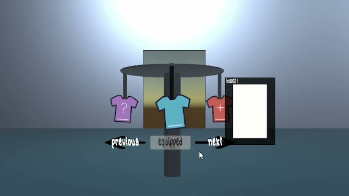

Interactive Outfit Closet | RCBDr
I built a rotating outfit closet in Unity that lets players browse four outfits, see which ones are locked, and equip an available outfit. The rack opens on the outfit they’re wearing. When they browse back to it, the button reads Equipped. Each sprite follows its hook, faces the camera, and sways gently from its hanging point.
How I built it
The part I enjoyed most was making the rack and the sprites move differently. I used Quaternion.AngleAxis to calculate each quarter-turn and Quaternion.Slerp to interpolate between the start and end poses. An IEnumerator coroutine advances the turn across frames with yield return null, while Mathf.SmoothStep eases the rack into and out of motion. For the sprites, I combined Quaternion.LookRotation with a small roll driven by Mathf.Sin. That let each sprite swing from the top while keeping its face visible as the rack turned.
What I learned
- Actions and events. I learned how a method gets connected to an
Actionevent. The rotator subscribes with+=, and the clothing manager fires the event with?.Invoke(). That let me keep outfit selection separate from the animation. - Lambdas and operators. I used a lambda (
=>) withFindIndexto check each slot for the equipped outfit,&&to skip the data check on an empty entry, and? :to choose a fallback. I also practiced using?.to read a nullable entry or fire an event with no listeners. - Math and animation. I used
%to wrap the selection between the first and last outfits,Mathf.Maxto handle a failed search, and Unity’s interpolation and trigonometry functions to shape how the rack and sprites move. - Enums and state. Working with the existing
BuffTypeenum gave me more practice using named values such asTime,Money,Sus, andNoneto represent gameplay choices and handle them in aswitch. I also usedtryandfinallyto make sure the temporary navigation guard resets if a callback throws.